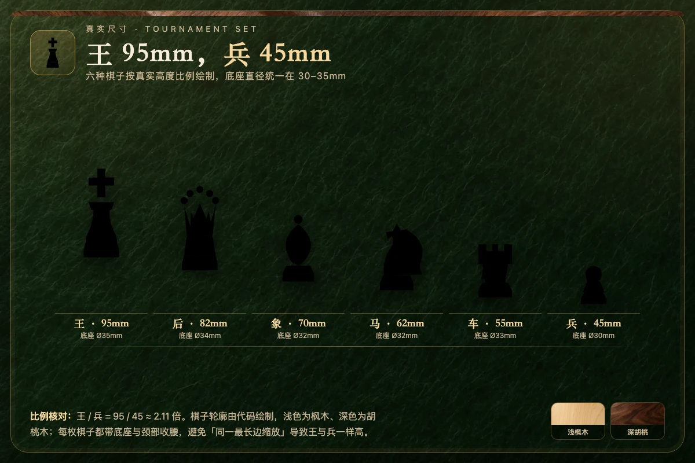
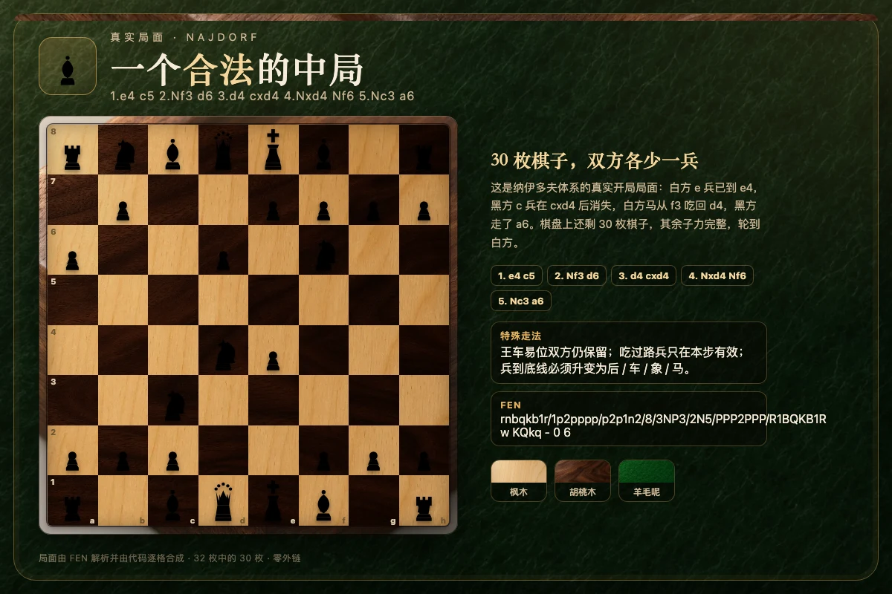

一句话规则：白方先行，双方轮流走一枚棋子；目标是把对方的王将死。王被攻击时必须立即解除将军，不能走出让己方王仍处于被攻击状态的着法。棋盘 8×8 共 64 格，开局 32 枚棋子，每方 16 枚：8 兵、2 马、2 象、2 车、1 后、1 王。

一、棋盘、坐标与开局摆放
标准棋盘由 64 个正方形组成，浅色格与深色格交替。国际棋联（FIDE）比赛棋盘的每格边长为 57 毫米，整块棋盘约 456 毫米见方，外加边框。坐标从白方视角读取：横线用字母 a 到 h 表示，从白方左侧向右；纵线用数字 1 到 8 表示，从白方底线向黑方底线递增。因此白方的左下角是 a1，右下角是 h1；黑方的左下角是 h8。
摆放口诀是「白后白格，黑后黑格」：白后放在 d1，白王在 e1；黑后在 d8，黑王在 e8。两翼依次是车、马、象，第二横线整排是兵。白方在 1、2 横线，黑方在 7、8 横线。棋盘摆放时，每个玩家的右下角必须是浅色格，这是检查棋盘方向最简单的办法。
本实现使用 0 到 63 的数组索引表示棋盘，索引 0 对应 a8，索引 63 对应 h1；引擎内部与 FEN 都以这个方向为准。界面会根据玩家颜色自动翻转视角，但着法坐标始终使用标准代数记法。
二、六种棋子的走法
1. 兵（Pawn）
兵只能向前走，不能后退，也不能斜着前进。兵在初始格时可以一次走一格或两格，但两格路线上不能有棋子；离开初始格后每次只能走一格。兵吃子与走子方向不同：它向斜前方一格吃子。兵走到对方底线时必须升变，可升变为同色的后、车、象或马。由于升变后的后兼具车与象的能力，绝大多数情况下升变为后最强，但在避免逼和或制造特殊战术时，也可能选择车、象或马。
2. 马（Knight）
马走「日」字：先直走两格再横走一格，或先横走两格再直走一格。马是唯一可以跳过其他棋子的棋子，落点可以是空格或对方棋子。马在棋盘中央最多有 8 个落点，在角落只有 2 个，因此「马走边、威力减半」是常见经验。
3. 象（Bishop）
象沿斜线走任意格，不能越过棋子。每枚象终生只在自己颜色的格子上活动：从浅色格出发的象永远在浅色格，从深色格出发的象永远在深色格。开局时每方两枚象分别控制深浅两种颜色，合称「双象」。双象在开放局面中配合极强。
4. 车（Rook）
车沿横线或纵线走任意格，不能越过棋子。车在开放线和次开放线上威力最大，残局中「车切王」和「车占第七横线」都是基本技巧。王车易位时，车会与王同时移动一格到王的内侧。
5. 后（Queen）
后同时具备车与象的走法，可以沿横线、纵线或斜线走任意格，不能越子。后是全局最强的棋子，价值通常记为 9 个兵。后过早出动容易被对方用小棋子攻击而浪费时间，因此开局阶段通常先出马、象并完成易位。
6. 王（King）
王向周围八个方向走一格，不能走到被对方攻击的格子，也不能与对方王相邻。王不能被吃掉：当王被攻击时称为「将军」，被将军的一方必须立即应将。王虽然移动缓慢，却是全局的核心；残局中王会主动走向中心参与作战。
三、王车易位
王车易位是一步同时移动王与车的特殊着法，每局每方最多各一次。短易位写作 O-O：王从 e1 到 g1，车从 h1 到 f1；长易位写作 O-O-O：王从 e1 到 c1，车从 a1 到 d1。黑方对应 e8 与 g8、e8 与 c8。
要完成易位，必须同时满足以下条件：王和对应的车都从未移动；王与车之间没有任何棋子；王当前没有被将军；王经过的格子与最终落点都不能被对方攻击。注意，车可以正被攻击，长易位时 b 线格被攻击也不影响，因为王不会经过 b 线。王一旦移动过，或者对应的车移动过、被吃掉，该侧易位权就永久消失。
四、吃过路兵
吃过路兵（en passant）是兵的特殊吃法。假设黑兵从 d7 一次走到 d5，恰好经过白兵在 e5 的斜吃格 d6；此时白兵可以在紧接着的这一步从 e5 斜进到 d6，并拿走 d5 上的黑兵。虽然白兵没有直接落在黑兵所在的格子，但黑兵仍然被吃掉。这个权利只在对方双步走的下一步有效，错过就永久消失。
吃过路兵同样受「不能让自己王被将军」的约束。如果吃过路兵会让己方王暴露在对方车或后的攻击线上，这步棋就是非法的。FEN 中会用目标格记录吃过路兵机会，例如 `4k3/8/8/3pP3/8/8/8/4K3 w - d6 0 1` 表示白方可以立即在 d6 吃过路兵。按照 FIDE 的重复局面判定，只有当吃过路兵确实合法时，这个目标格才影响局面是否相同。
五、将军、将死与逼和
当一方的王受到对方棋子攻击时，称为「将军」。被将军的一方必须通过三种方式之一解除：吃掉攻击的棋子、把棋子垫在王与攻击者之间、或者移动王到安全格。任何让己方王继续被攻击的着法都是非法的，引擎会在生成合法着法时自动剔除。
如果一方被将军且没有任何合法着法，就是「将死」，对方获胜。如果一方没有被将军，但同样没有任何合法着法，就是「逼和」，双方和棋。逼和是初学者最常忽略的和棋方式：优势方在残局中把对方王逼到无路可走，却忘了留一个安全格，结果把胜利走成了和棋。
本实现会在每次走子后重新计算全部合法着法，并把将军状态、将死与逼和同步到界面。棋谱使用标准代数记法，将军加「+」，将死加「#」。
六、和棋条件
除了逼和，正式规则还包含多种和棋条件。第一是「三次重复局面」：同一局面出现三次，且轮到同一方走、双方易位权和可用的吃过路兵权利都相同，可以判和。第二是「五十回合规则」：连续 100 个半回合（即双方各走 50 步）没有吃子也没有兵移动，可以判和。第三是「子力不足」：棋盘上已经不可能出现将死，例如王对王、王单象对王、王单马对王，或双方各有一枚同色格象。
此外，双方可以协商和棋；在正式比赛中还可以因为重复局面或五十回合规则向裁判提出和棋申请。本实现采用自动判定：三次重复、半回合计数达到 100、或子力不足时，立即以和棋结束。将死优先于五十回合规则：如果最后一步恰好将死，即使半回合计数已经达到 100，仍然判将死而不是和棋。
七、真实尺寸、颜色与材质
| 棋子 | 高度 | 底座直径 | 走法要点 |
|---|---|---|---|
| 王 King | 95mm | Ø35mm | 周围一格，不能走入被攻击格 |
| 后 Queen | 82mm | Ø34mm | 横、竖、斜任意格 |
| 象 Bishop | 70mm | Ø32mm | 斜线任意格，不越子 |
| 马 Knight | 62mm | Ø32mm | 走日字，可越子 |
| 车 Rook | 55mm | Ø33mm | 横竖任意格，不越子 |
| 兵 Pawn | 45mm | Ø30mm | 向前一格，初始可两格，斜吃 |
实体比赛棋子通常用黄杨木或枫木做浅色方、胡桃木或乌木做深色方。本项目的 32 枚棋子全部由代码绘制，按真实高度比例安排轮廓：王最高、后略矮、象与马居中、车与兵最矮，底座宽度保持在 30–35 毫米对应的比例区间。棋盘格使用浅枫木与深胡桃木两种真实木材贴图，桌布为墨绿色羊毛绒面，边框为胡桃木倒角。

八、FEN 与引擎能力
FEN（Forsyth–Edwards Notation）用一行文本描述完整局面，字段依次是棋子摆放、行棋方、易位权、吃过路兵目标格、半回合计数和完整回合数。例如初始局面是 `rnbqkbnr/pppppppp/8/8/8/8/PPPPPPPP/RNBQKBNR w KQkq - 0 1`。斜杠分隔八条横线，数字表示连续空格，大小写表示黑白。FEN 可以精确复现任意合法局面，也方便测试特殊规则。
本页引擎是纯函数实现：从 FEN 解析、合法着法生成、走子与撤销、perft、局面 key、将死与和棋判定，到 SAN 与 UCI 记法都可独立运行。perft 在起始局面深度 1、2、3 的结果分别是 20、400、8902，第四个深度为 197281，与公开基准完全一致；Kiwipete 等标准测试局面的 perft 也逐项吻合。这说明王车易位、吃过路兵、升变和将军过滤都被正确覆盖。
AI 使用 Alpha-Beta 极小化极大搜索，配合迭代加深、子力价值、位置表、机动性与王的安全评估；只从合法着法中选子，支持升变与将死分数，浏览器内每步最多 400 毫秒。入门、进阶、高手三档分别设置不同的目标深度与时间上限。
九、联机与交互说明
联机页面由服务端权威判定：两个客户端提交 `{type:'move', from, to, promotion?}`，服务端验证轮次、棋子颜色和合法着法后再落子。双方看到同一块棋盘、同一份棋谱和同样的吃子托盘；chess 是完全公开信息游戏，没有隐藏手牌。空座位由 AI 补齐，掉线超过设定时间后自动托管，重连即可恢复，结算写入匿名排行榜，房主可以在对局结束后发起重赛，重赛自动交换黑白颜色。
单人页面支持人机与本地双人。点己方棋子显示合法落点，圆点表示空格，圆环表示可吃子；再点目标格落子。升变时弹出后、车、象、马四个选择。悔棋在人机模式会退回到你的回合，在新局或对局结束后仍可使用。音效由共享模块实时合成，不加载音频文件；页面不请求任何外部字体、图片、脚本或样式。
十、B 站规则来源
- 11分钟零基础完整学会国际象棋！ UP：子聪学长 · BV1PuokBiEb6 · https://www.bilibili.com/video/BV1PuokBiEb6 核对要点：视频章节明确列出如何走子与吃子、将军与应将、将死与逼和、摆棋与开局，以及升变、吃过路兵、王车易位三种特殊走法。
- 国际象棋吃过路兵【国际象棋基础】 UP：国际象棋IM杨海南 · BV1uA4y1Q7uQ · https://www.bilibili.com/video/BV1uA4y1Q7uQ 核对要点：吃过路兵只在相邻兵双步经过可吃格时成立，而且必须在紧接着的下一步执行，否则权利消失。
- 国际象棋王车易位【国际象棋基础】 UP：国际象棋IM杨海南 · BV1HS4y1w7Ey · https://www.bilibili.com/video/BV1HS4y1w7Ey 核对要点：王与车都不能移动过，之间不能有子，王不能在被将军时易位，经过格与落点格都不能被攻击。
以上视频仅作为规则校对来源；本页文字、棋盘、棋子轮廓、AI、联机实现与配图均为本项目原创，未复制视频画面或音频。
十一、常见问题
问：兵走到最后一行可以不吃子吗？可以。兵直进到对方底线同样必须升变；升变与是否吃子无关。
问：王可以吃掉正在将军的棋子吗？可以，但前提是吃掉后王自己不再被其他棋子攻击。吃掉受保护的攻击者通常不合法。
问：易位时车被攻击可以吗？可以。规则限制的是王，不是车；但如果车被吃掉或已经移动过，就失去该侧易位权。
问：三次重复一定要连续发生吗？不一定。只要同一局面在整盘棋中出现三次，并且行棋方、易位权与合法吃过路兵权利一致，就可以判和。
问：五十回合到了但刚好将死怎么办？将死优先。只要最后一步形成将死，即使半回合计数达到 100，也判将死。